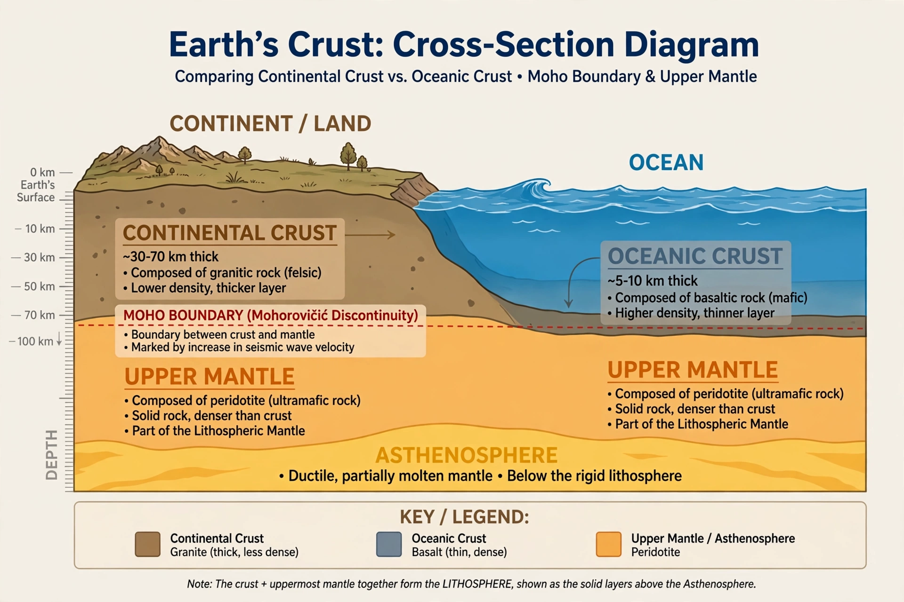

From Wikipedia, the free encyclopedia
| Continental crust | |
|---|---|
 Continental crust is far thicker than oceanic crust | |
| Thickness | Typically 30–50 km; up to ~70–80 km under mountain ranges |
| Density | ~2.7 g/cm³ |
| Composition | Felsic to intermediate: granite, granodiorite, sedimentary cover |
| Age | Up to ~4 billion years (cratons) |
| Fraction of surface | ~41% (incl. submerged continental shelves) |
The continental crust is the layer of igneous, sedimentary and metamorphic rocks that forms the geological continents and the areas of shallow seabed close to their shores (continental shelves). It is the uppermost part of Earth's lithosphere beneath the continents, less dense than both oceanic crust and the mantle below, and therefore buoyant — which is why continents ride high and persist for billions of years while oceanic crust is continually recycled by subduction.
Continental crust averages roughly 35–40 km in thickness, thinning at rifted margins and thickening to 70 km or more beneath young mountain belts such as the Himalayas and Andes. Its average composition is approximately that of granodiorite — rich in silica, aluminium, sodium and potassium — in contrast to the basaltic oceanic crust. Because of its buoyancy and thickness, it resists subduction, so fragments survive from very early in Earth history: the Acasta Gneiss of Canada and the Jack Hills zircons of Australia preserve material around 4 billion years old.
Continents are assembled from cratons — ancient, stable cores of Precambrian rock (exposed as shields, or buried under platform sediments) — fringed by younger orogenic (mountain-building) belts. The upper crust is brittle and faulted; the lower crust is hotter and more ductile, probably of more mafic composition. The base of the crust is defined seismically by the Mohorovičić discontinuity (Moho), where wave speeds jump as rocks pass into the peridotite mantle.
Continental crust is thought to grow mainly at subduction zones, where mantle-derived magmas differentiate into buoyant felsic melts that accrete to continents — the process that built much of the crust through the Archaean and Proterozoic. Sediment subduction, underplating and delamination modify the inventory. Dating crustal growth is a central problem of geochronology: models differ on whether most crust formed early and was reworked, or accumulated steadily to the present.